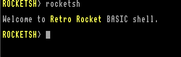
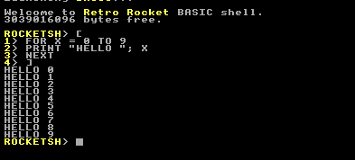

|
Retro Rocket OS
BASIC-Powered Operating System
|
|
Retro Rocket OS
BASIC-Powered Operating System
|
rocketsh is the interactive shell used to execute commands and run programs. It is launched by init at boot and is always available at the system prompt.

This page describes rocketsh in detail. For a simple overview of using the shell, see The Shell in the User Guide.
The rocketsh shell supports command line editing. You may use the cursor LEFT and RIGHT keys plus HOME and END to navigate in the current line and edit it, inserting into the line if neccessary.
Alternately, you can use the cursor UP and DOWN keys to move through the history of recently entered commands. If you edit one of these commands or send it, it will be inserted into the history again as the latest command.
The history buffer will grow as needed to accomodate as many history items as you enter.
Pressing ESC will abort the current line entry, clearing its contents and advancing down to the line below.
These interactive line editing facilities are also available to any other BASIC programs via the ansi library.
The rocketsh shell supports two forms of input; firstly any command you type is searched for as a program under the /programs directory. If it can be found it is executed. The path under which rocketsh searches for programs to run can be changed, as shown below.
If no matching program can be found, the line is passed to EVAL instead and any changes to the program state will be inherited by rocketsh, including documented variables below.
Any line entered at the prompt which is not resolved to a program is executed using EVAL.
This means the shell accepts full BASIC syntax directly at the prompt, including:
All built-in BASIC keywords, operators, and functions are available exactly as they are within a BASIC program.
Single-line input executes in the current shell context.
Multi-line input (see below) executes as an anonymous child program.
Changes made by single-line execution persist in the shell environment.
rocketsh supports entering and executing multi-line BASIC programs directly at the prompt.

The entered lines are combined and executed using EVAL as an anonymous program.
Change the current working directory.
Move to the parent directory (one level up).
For example, if you are in /programs/tools, up will take you to /programs.
Run a program from the directory set in PATH$.
This runs the program named myprog from the current program search path.
Run a program from PATH$ in the background.
The program starts and runs independently, allowing you to continue using the shell.
Display version and copyright information for the shell.